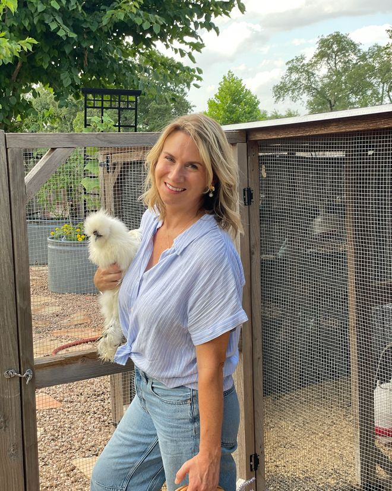

I’m curious about the philosophy
Start with the Why
Narration as backbone, living books over textbooks, and attention as a habit of mind — the clearest answer to how this differs from a conventional English course.
Read the approachDelight & Savor · Upper-Level Language Arts, Grades 9–12
Literature and language arts for students learning not simply to analyze books, but to read deeply, think honestly, and pay attention to the world.
What We Are Really Teaching
A student studying a paragraph, a painting, a piece of music, or a bird's nest is practicing the same movement of mind. Four movements, really — the ones that turn reading into writing.
Look closely.Follow the evidence.Make meaning.
Notice what’s there.
Trace what matters.
Make meaning.
Put it into words, and keep it.
A Field Guide to Living Books
Some books are read; a few are kept.
Browse the full collectionSome books are read; a few are kept.
Start Here
Three ways in, depending on who you are.
I’m curious about the philosophy
Narration as backbone, living books over textbooks, and attention as a habit of mind — the clearest answer to how this differs from a conventional English course.
Read the approachI homeschool
Macbeth and Wuthering Heights — two giants of Tragedy & Gothic. Fifteen weeks of handouts, teacher guides, Find It · Follow It · Frame It · Keep It analysis and a thesis workshop — paced for one student at the kitchen table.
See Year One unitsI teach a co-op or class
Every unit ships in a co-op version alongside the home-study one, with an optional Honors Track for students ready to go deeper. Same content, same rigor, built for a group.
See the co-op versionFrom Page to Place
Reading a place is reading a page — look closely, follow the evidence, notice how things connect, then make meaning.
Nature Study & the Art of Attention
From Reading to Writing
Every great essay begins not with an argument, but with attention.
Reading Narration Reflection Written Analysis
At the Writing Table, students move gently from reading to narration, from narration to reflection, and finally into written analysis — learning to notice what lingers, to trust their own thinking, and to say something true about what they've read.
But the real work runs deeper than the page. To read a book well is to be changed by it: to see ourselves, and others, and the world we live in with new understanding.
There is no trick to any of it. It is organic, it is honest — and year after year, it simply works.
From the commonplace book
Literature and language arts are the table at which a student learns to think — not just about what a text says, but about what it means to be human.
On the Delight & Savor Approach
Read the full philosophy →From the Journal
Charlotte Mason–inspired reflections on learning, parenting, and beauty in the everyday — sent quietly, read slowly.
Visit the journal to read recent reflections on living books, nature study, and the slow work of cultivating attention.
Open the journal
at the ranch · Hill Country of Texas
Meet Your Guide
For nine years I taught AP Language & Composition and AP British Literature in a public-school classroom. Then we brought our family home to fifteen acres in the Hill Country of Texas. I hold a master's in Literary Studies — but more than that, I'm a reader, a teacher, and a mother who believes great literature is meant to be encountered, not dissected from a safe distance.
Homeschooling and Charlotte Mason didn't make me abandon rigor. They changed what I thought rigor was for. It stopped being about producing a defensible reading and started being about forming a student who can pay attention — and that asks more of them, not less.
So every unit I write asks the question Charlotte Mason asked: What does this child deserve to think about?
Every unit here began as something noticed in the margin of my own reading — a question I couldn’t put down. I keep the best of them, and pass them on.